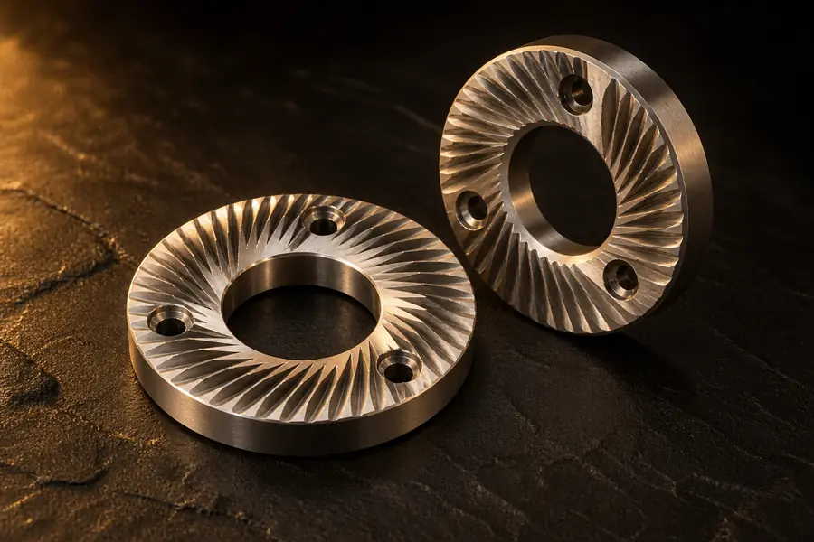
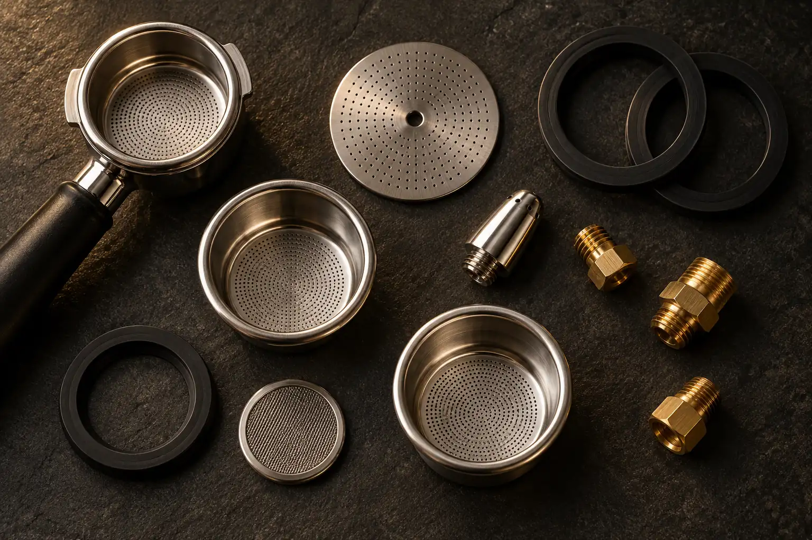
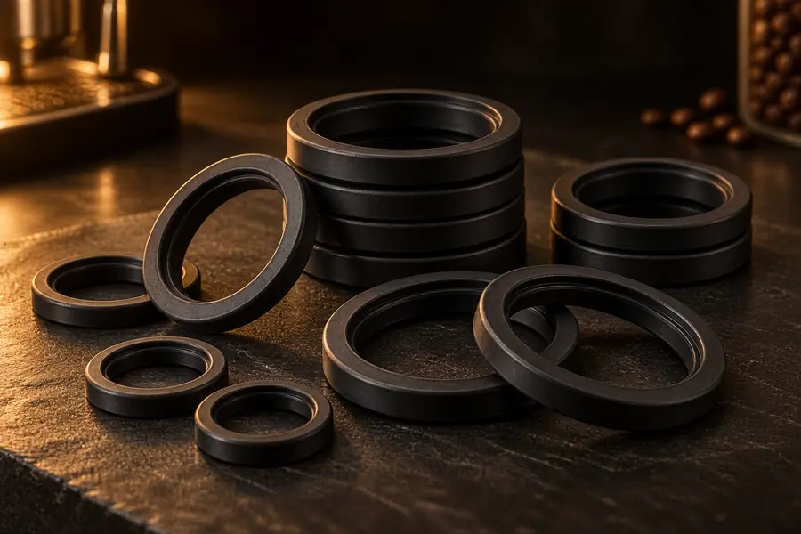
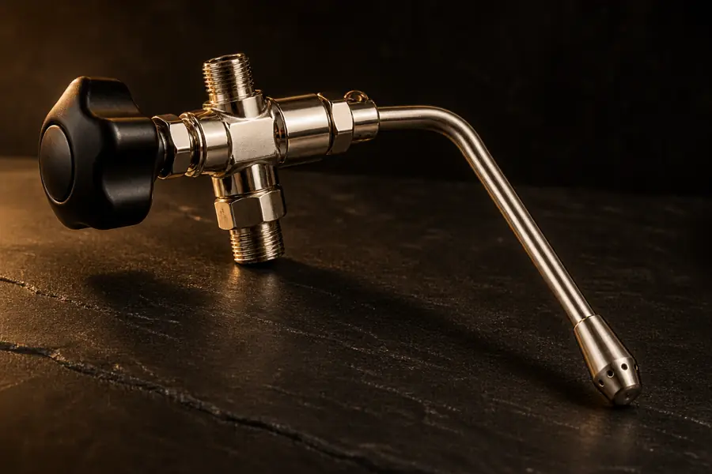
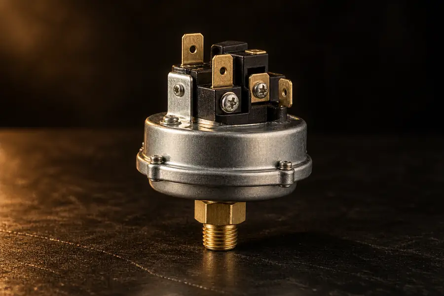
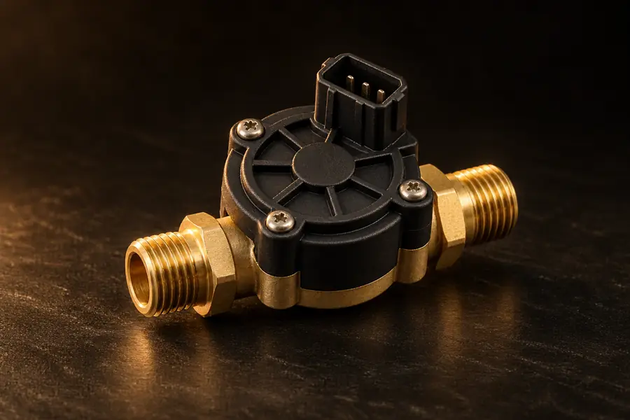
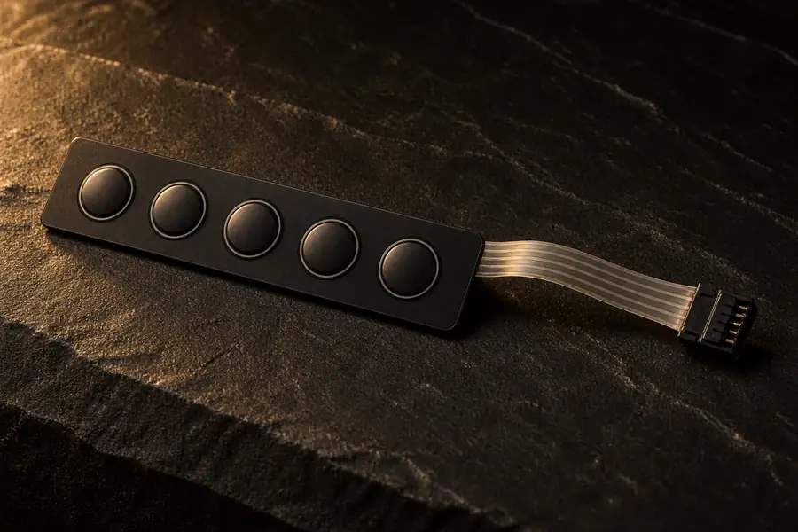
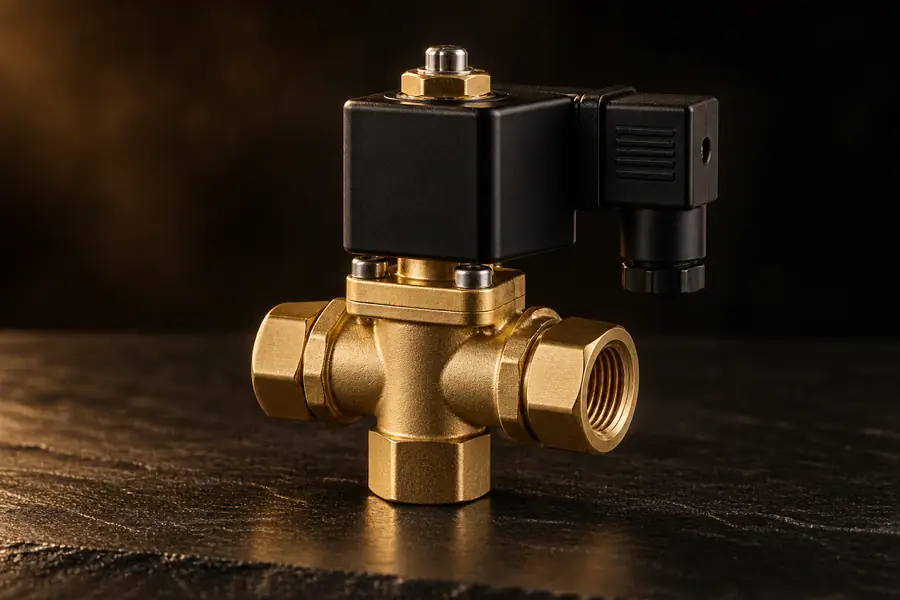
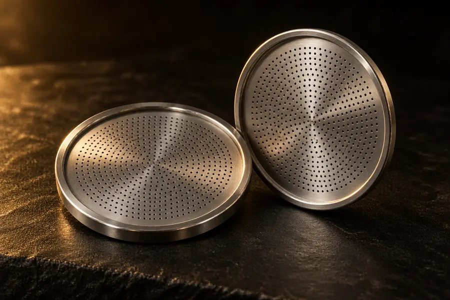
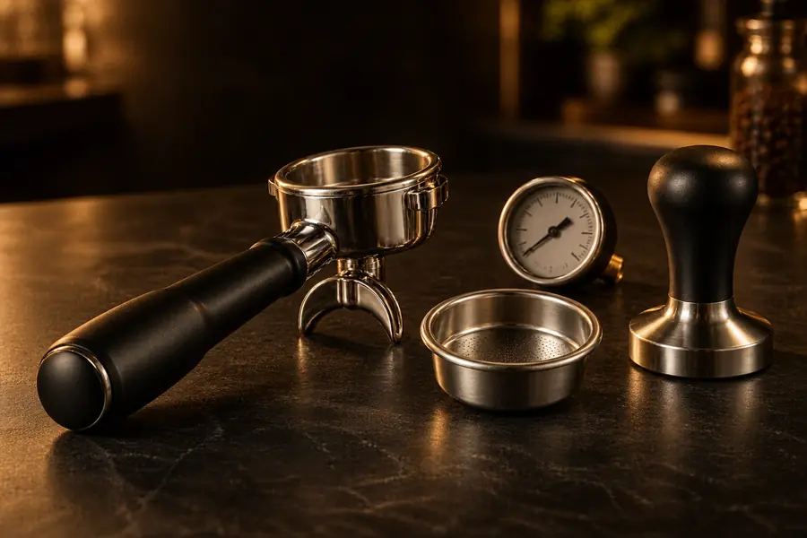

Cuchillas Imagen ilustrativa Stock disponibleCompak · Universal
Cuchillas planas 64 mm Compak K3 / K6
- Ref: CCH-CPK-64
- Diámetro: Exterior 64 mm / Interior 38 mm
- Material: Acero templado de alta duración

Componentes y accesorios multimarca
Mantén tus máquinas espresso en perfecto estado operacional. Consulta por repuestos para marcas como La Marzocco, Rancilio, Nuova Simonelli, Faema, Astoria y Gaggia.

Cuchillas Imagen ilustrativa Stock disponibleCompak · Universal

Empaques de grupo Imagen ilustrativa Stock disponibleAstoria · Gaggia · Wega

Válvulas vapor/agua Imagen ilustrativa Stock disponibleRancilio · Nuova Simonelli

Eléctricos Imagen ilustrativa Stock disponibleSirai · Multimarca

Contadores volumétricos Imagen ilustrativa Stock disponibleGiemme · Ceme · Faema

Botoneras Imagen ilustrativa Bajo pedidoLa Marzocco · Faema

Electroválvulas Imagen ilustrativa Stock disponibleParker · ODE · Ceme

Duchas Imagen ilustrativa Stock disponibleE61 · IMS Precision · Faema

Varios Imagen ilustrativa Stock disponibleUniversal · 58 mm
Prueba con otra búsqueda, o escríbenos y te ayudamos a localizar la pieza que necesitas.
Envíanos la fotografía de la pieza o el modelo exacto de tu máquina y te ayudamos a localizarla.